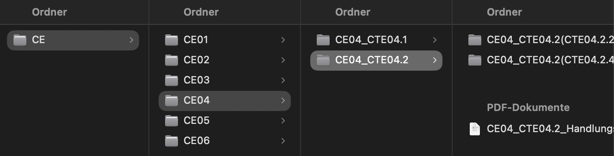

Am Anfang meiner Ausbildung habe ich einen Fehler gemacht, der mich über vier Stunden Arbeit gekostet hat. Heute ist meine Ordnerstruktur genau das, was ich damals gebraucht hätte. Hier erzähle ich, wie es dazu kam.
Am Anfang hatten wir die Wahl
Als meine Ausbildung anfing, haben uns die Lehrer gesagt, dass wir selbst entscheiden können, ob wir alles digital machen oder mit Ordnern arbeiten. Gleichzeitig durften wir wählen, wie wir unsere Unterlagen sortieren: nach Lehrern oder nach den CE Einheiten. Bei uns ist der Unterricht nach dem Curriculum aufgebaut, was ich definitiv sehr gut finde. Ich habe mich für digital entschieden.
Mein Fehler: nach Lehrern sortiert
Den ersten Monat habe ich alles nach Lehrern sortiert. Dann merkte ich, dass das ein Fehler in der Ordnerstruktur war. Ich hätte damit nur doppelte Arbeit gehabt, und nach mehreren Monaten wäre es sehr unübersichtlich geworden.
Das Problem an der Sache ist, dass sich mehrere Lehrer eine CE teilen. Dazu kommen die CTE Einheiten, die wieder unterschiedlich sind, und manchmal haben für dieselbe CTE mehrere Lehrkräfte unterrichtet. Da steht man dann und weiß nicht mehr, wo etwas hingehört.
Die erste Klausur machte es deutlich
Dann ging es an die erste Klausur, CE01, und ich dachte mir: Oh nein, ich hätte nach den CE Einheiten sortieren sollen, mit Unterordnern.
Vier Stunden Umbau
Ich habe mich über vier Stunden hingesetzt und alles neu strukturiert und umorganisiert, sodass alles nach den CE Einheiten eingeteilt ist. Danach habe ich gemerkt, dass das die beste Entscheidung war. Alles, was danach kam, konnte ich besser zuordnen, und es war egal, welcher Lehrer es unterrichtet hat. Es war und ist bis heute immer sortiert.
So sieht das bei mir aus
Damit ihr euch das vorstellen könnt, habe ich einen Ausschnitt aus meinem Ordnersystem mitgebracht. Man muss nicht alles erkennen, es geht um die Ebenen: ganz links der Hauptordner CE, dann CE01 bis CE06, dann die CTE Ordner und ganz rechts die Unterordner und die PDF Dokumente.

Was ich daraus mitnehme
- Nach dem Curriculum sortieren und nicht nach Lehrern. Dann ist egal, wer etwas unterrichtet.
- Mit Unterordnern arbeiten, von der CE bis zur einzelnen CTE.
- Von Anfang an so anlegen. Umbauen später kostet Stunden.
Die nächsten Beiträge
Die Tage folgt noch mehr, denn Schule, strukturierte Ordnerorganisation und der beste Workflow sind ein sehr umfangreiches Thema. Ich muss dazu noch sehr viel schreiben, damit es jemand nachbauen kann. Ich überlege auch, ob ich daraus eine kostenlose Zip Datei oder eine Anleitung mache, wie ich alles aufgebaut habe, mit den ganzen Funktionen im Hintergrund, denn das meiste läuft bei mir automatisiert.
Fragen zu meiner Ordnerstruktur? Schreib mir einfach eine Mail an vollmer.steffen@icloud.com mit dem Betreff Pflegeblog. Ich freue mich über jede Frage.